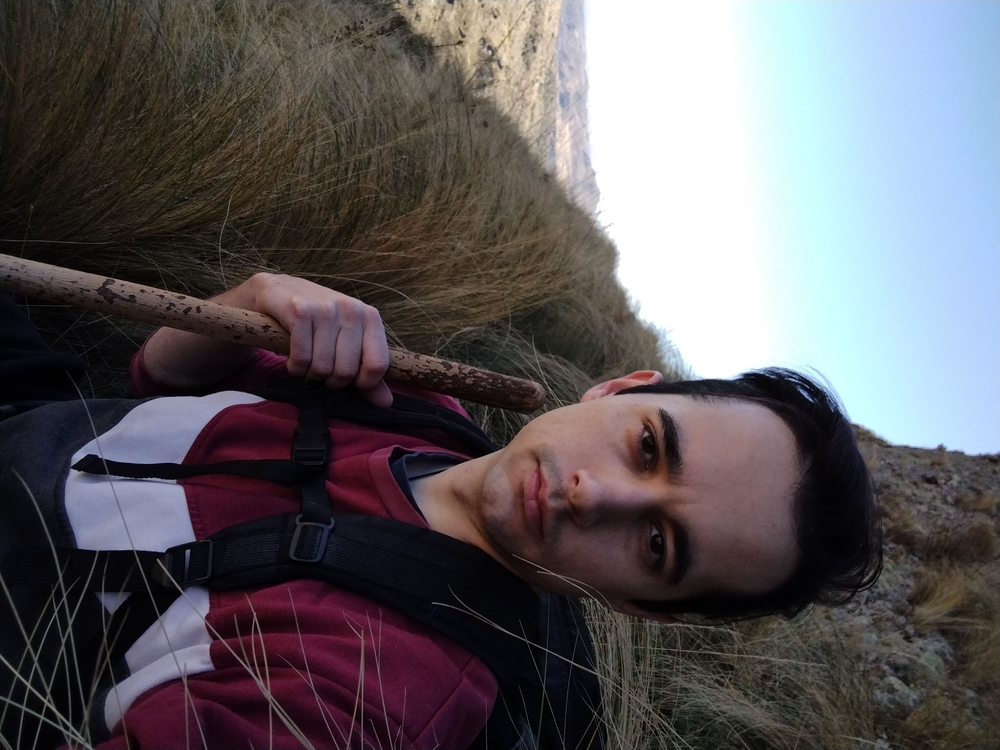
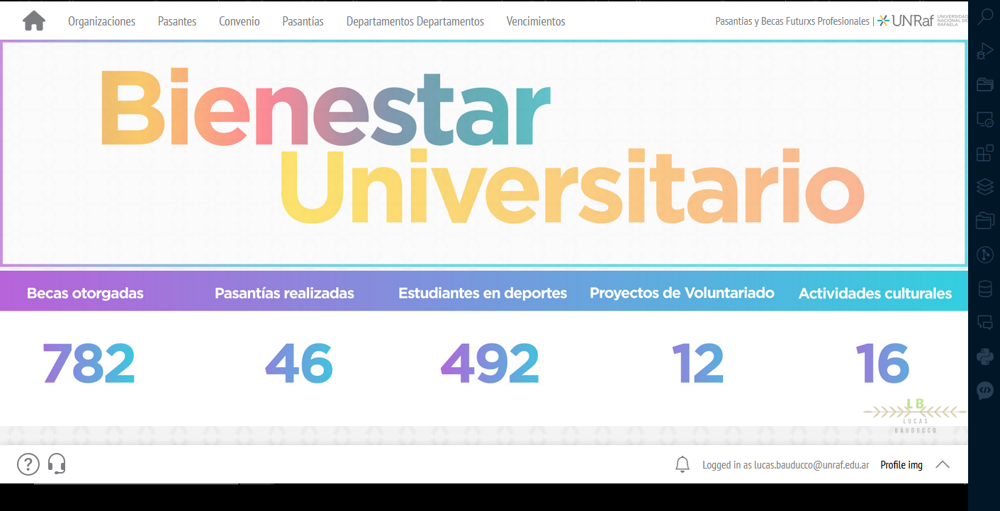

API REST · Sistema académico
Servicio de integración para información académica, con autenticación y documentación interactiva de endpoints.
Ver proyecto
Disponible para nuevos desafíos
Construyo APIs y sistemas web robustos, combinando experiencia backend con un flujo de desarrollo asistido por IA, verificable de principio a fin.

Perfil profesional
Soy desarrollador web con foco en backend. Trabajo con Symfony, Django y APIs REST para convertir procesos complejos en productos mantenibles, seguros y fáciles de evolucionar.
También construí portales administrativos, aplicaciones móviles con Vue.js e Ionic, automatizaciones y servicios para organizaciones públicas y privadas.
La IA acelera el proceso; la ingeniería sigue definiendo la calidad.
Trabajo seleccionado
Una selección de APIs, aplicaciones y automatizaciones construidas para contextos reales.
Servicio de integración para información académica, con autenticación y documentación interactiva de endpoints.
Ver proyecto
API para extraer y estructurar información de facturas y tickets mediante procesamiento de imágenes.
Ver repositorio
Experiencia multiplataforma que acerca servicios universitarios a dispositivos móviles y navegadores.
Ver proyecto
Plataforma institucional para organizar y acompañar el circuito administrativo de pasantías.
Proyecto institucionalHerramientas
Tecnologías elegidas según el problema, con una base fuerte en backend e integración de sistemas.
Ingeniería aumentada
Uso Claude Code como colaborador técnico dentro de un proceso controlado: contexto claro, alcance verificable y evidencia antes de dar una tarea por terminada.
Más velocidad para iterar. El mismo rigor para entregar.
Análisis del repositorio, alcance, riesgos y criterios de aceptación antes de modificar código.
Implementación guiada por instrucciones persistentes, contexto del proyecto y objetivos concretos.
Herramientas y procesos reutilizables para conectar documentación, servicios y tareas especializadas.
Delegación de análisis y controles independientes cuando la complejidad necesita distintas perspectivas.
Pruebas, lint, seguridad y revisión del diff para validar el resultado y reducir regresiones.
Formación continua
La formación formal y el aprendizaje continuo acompañan cada etapa de mi recorrido profesional.
Universidad Tecnológica Nacional · 3 años
Hablemos
Estoy abierto a proyectos y oportunidades donde pueda aportar experiencia técnica, autonomía y una mirada práctica.